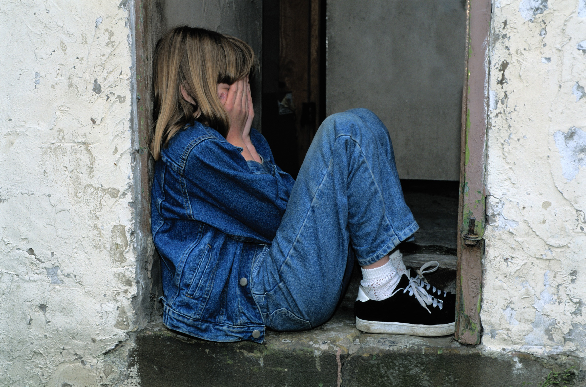
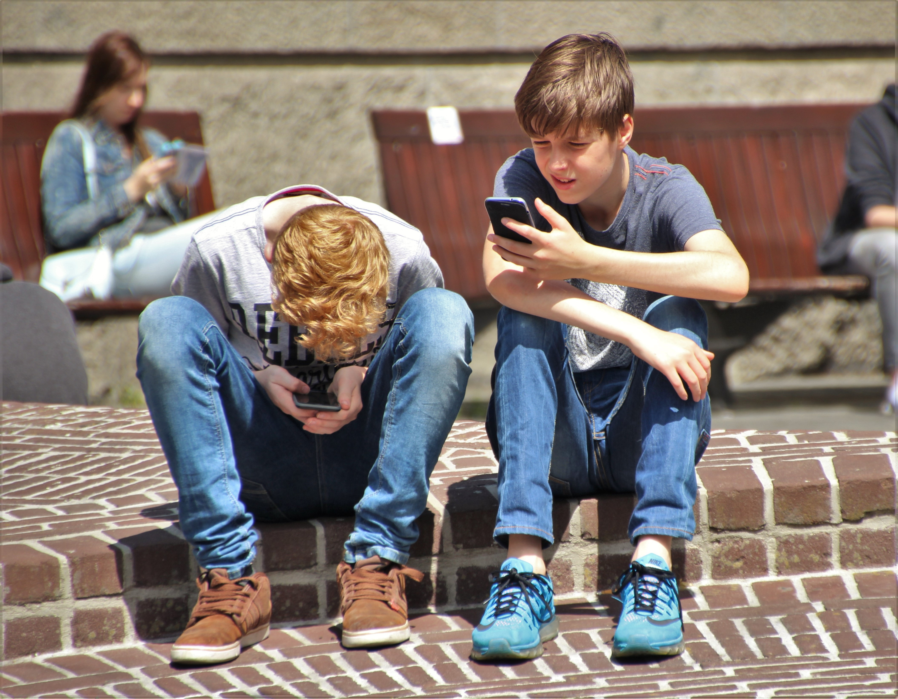

Samfunnets viktigste utfordring
Det å føle seg alene er en utfordring mange kjenner på i dagens samfunn. Spesielt mange barn og unge kjenner på ensomheten eller det å ikke strekke til i en verden som ikke har tid til deres utfordringer. Dette kan være barn som mobbes, ikke har venner, ikke takler presset som både de og verden legger på deres skuldre, eller som ikke får svar på alt de lurer på her i livet.
Hvordan kan Friminutt hjelpe barn og unge?
En fadderording for barn fra barneskole til utgangen av videregående skole. Denne ordningen setter fokus på flere problemer i samfunnet som vi ikke har funnet noen god løsning på. Det gjøres stadig forsøk på å hanskes med problemet gjennom kampanjer og reformer, men som regel virker de bare i en liten periode. Deretter går livet videre for alle andre enn de som opplever ubehaget på kroppen. Det kan være lett å sitte på utsiden og foreslå tiltak for å få bukt med problemene, men vi tror at det kun kan løses gjennom «fysisk» tilstedeværelse. De som styrer landet er oppvokst i en tid hvor mobbing ikke skjedde anonymt over nettet. Hvor mobbing var synlig og lettere kunne håndteres, fordi den var observerbar. Nå forsvinner barn og unge inn i en verden hvor ensomhet kan skjules, mobbing gjøres bak et tastatur, og bilder av et perfekt liv florere i sosiale medier.

«Det vil alltid være mobbere»
Dette er kanskje en uttalelse som vil vekke reaksjoner, men faktum er at det alltid har eksistert mennesker som får det bedre med seg selv, ved å påføre andre smerte. Forskning peker på at dette er mennesker som selv sliter, men faktum er at de påfører også andre uopprettelig smerte. Barn formes i de tidlige årene, og å bli mobbet er noe som de drar med seg gjennom hele livet. Når barn først kommer inn i en ond sirkel er det vanskelig å komme seg ut, nettopp fordi omverden danner seg et inntrykk og setter mennesker i bås. Vi i Friminutt mener at vi kan være en viktig brikke i kampen mot mobbing, og være en positiv kraft i mobbeofferets liv.
Ensomhet er en slags venn
Nei, ensomhet er aldri en løsning! Noen føler for å være alene for å samle krefter, men det er langt i fra det samme som å ikke ha venner. Å kjenne på følelsen av å ikke ha noen å kunne ta kontakt med, å sitte hjemme mens alle vennene er på den samme festen, eller å få høre om bursdagsselskapet som du ikke var invitert i er alle situasjoner som ingen barn burde oppleve. Dessverre er det mange barn som føler på dette, og vi synes ikke dette er greit. Derfor vil vi utgjøre en forskjell.

Det perfekte liv
Dagens ungdom opplever angst, depresjon og et verdensbilde som voksne har problemer med å relatere til. Vi vokste opp med mail og msn som noe nytt og spennende. Bildedeling var aldri et alternativ. Og alle visste hvordan livet til den andre var, uten at inntrykket var sminket. Dette var forbeholdt voksne mennesker, ikke ungdommen. Nå til dags lever mange ut livet gjennom instagram og liknende nettsider, hvor de skal hente inspirasjon fra andre. Det som begynte som en bildedelingsapp, utviklet seg, for noen, til å bli en app hvor livet måtte fremstå som perfekt. Uansett hva man gjorde så måtte bilde reflektere en perfekt hverdag og en perfekt livsstil. Utad ser verden en alltid smilende og sjarmerende jente som reiser og opplever noe nytt hver dag. Innad er det en usikker jente som er sliten av å hele tiden måtte fremstå som perfekt. Vi tror at de som opplever både et slikt press fra omverden, men også følelsen av å ikke strekke til, trenger noen å prate med. Her er det vi kommer inn!
Et annerledes tilbud
Fadderordningen skal være et tilbud til barn og unge som ikke finner seg til rette i hverdagen. Fadderprogrammet være et tilbud til de som opplever mobbing, ensomhet, en følelse av å være overveldet i skolesammenheng, og press både fra seg selv og andre i forhold til hvordan man må være for å oppleves som vellykket. Vi ønsker å utgjøre en forskjell i livene til barn og unge, og vise dem at det finnes opplevelser å glede seg til å fremtiden.
Fadderordningen skal kunne gi ungdom svar på vanskelige spørsmål, men det er ikke en helsetjeneste. Vi vil alltid forsøke å svare etter beste evne, men vi vil aldri forsøke å veilede barn eller unge innenfor psykisk helse eller medisinske områder som kreves fagekspertise. Skulle det oppstå situasjoner hvor vår kompetanse og ekspertise er mangelfull, vil henvise til fagpersonell, og vi vil også involvere foreldre i situasjonen.
På denne måten hjelper vi i Friminutt barn og unge. I en verden som ikke alltid har tid, vil det alltid finnes svar i appen Friminutt!